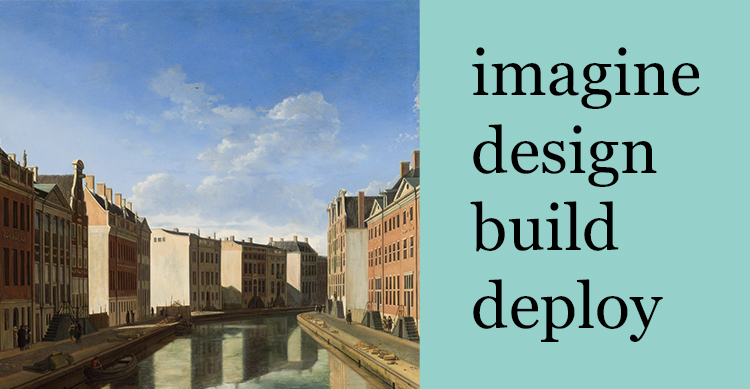

Developer using python, javascript, css, html, fully
responsive design, netlify, git, analytics. unending & restless curiosity. to write elegant & lean code.
Designer using adobe photoshop, indesign, after effects,
premiere pro, lightroom. an entirely healthy obsession with colour, light, aesthetics.
My </coding> journey began with Colt Steele’s Web Developer Bootcamp. Since completing that course, I’ve
moved onto more advanced topics and projects. My current skills and interests are mainly in front-end
development and design, with growing proficiency in back-end technologies. I’ve been unknowingly learning
design theory and practice ever since I was given my first camera and photography book, Robert Capa’s
Heart of Spain, as a young teenager. I hold degrees in philosophy, English, and finance. Philosophy
in particular taught me how to understand difficult concepts quickly, question assumptions, follow an argument
carefully, and then communicate what I learnt effectively. In other words, if your son or daughter is
considering philosophy at university, don’t be afraid for them. Outside of these formal studies, my technical
reading covers some philosophy of science and Superintelligence by Nick Bostrom. If you have a
project in mind, then feel free to
get in touch
to discuss possibilities.

imagine.
design.
build.
deploy.
design.
build.
deploy.